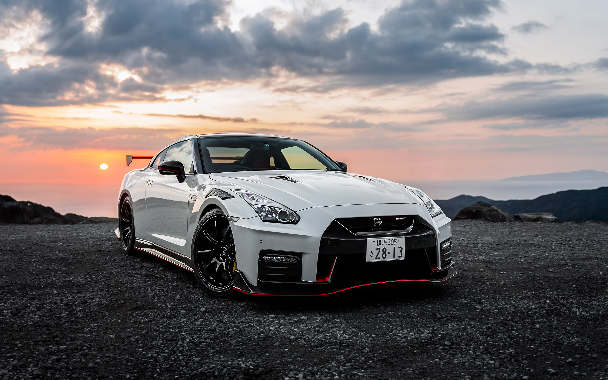
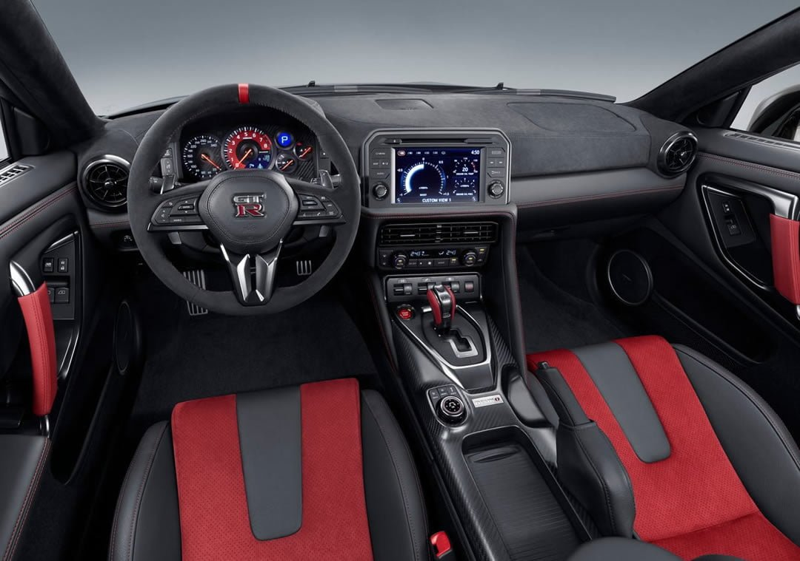

AGRESİF VE FONKSİYONEL tasarım
Nissan GT-R Nismo, Japonya'nın efsane süperkarının en aşırı versiyonu. NISMO tarafından özel ayarlanmış aerodinamik paketi, karbon fiber ön kanat ve diffüzörü ile hem pist hem yol performansını zirveye taşıyor.
- ✓ Ultimate Metal Silver Özel Boya Rengi
- ✓ 20 inç RAYS Forged Jantlar
- ✓ Karbon Fiber Ön Splitter ve Büyük Arka Spoiler

SÜRÜCÜ ODAKLI KOKPİT
GT-R NISMO'nun kabini, yarış kokpitinin ruhunu modern teknolojiye taşıyor. Alcantara kaplı RECARO koltuklar, yeniden tasarlanmış direksiyon simidi ve güncellenen bilgi-eğlence sistemi sürücüye tam hakimiyet sağlıyor.
- ✓ RECARO Kırmızı Alcantara Yarış Koltukları
- ✓ Karbon Fiber kabin Detayları
- ✓ Bose 11 Hoparlörlü Ses Sistemi
TEKNİK MÜHENDİSLİK
0-100 KM/H2.5sn
GÜÇ600hp
MAKSİMUM TORK652nm
MOTOR HACMİ3.799cc
MAKSİMUM HIZ315km/h
BOŞ AĞIRLIK1.720kg
ŞANZIMANGR6 DCT6-ileri
ÇEKİŞ SİSTEMİATTESA AWD4x4
SİLİNDİR6V6 twin-turbo